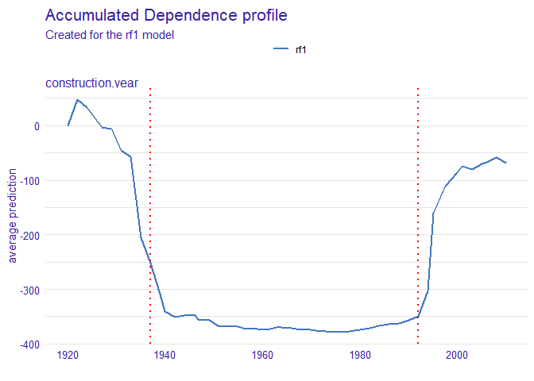
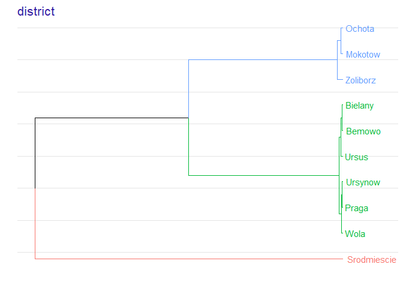
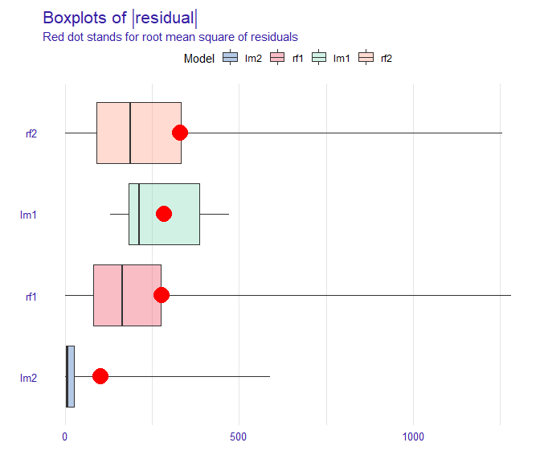

Surrogate Assisted Feature Extraction in R 
Overview
The rSAFE package is a model agnostic tool for making an interpretable white-box model more accurate using alternative black-box model called surrogate model. Based on the complicated model, such as neural network or random forest, new features are being extracted and then used in the process of fitting a simpler interpretable model, improving its overall performance.
Installation
The package can be installed from GitHub using the code below:
install.packages("devtools")
devtools::install_github("ModelOriented/rSAFE")Demo
In this vignette we present an example of an application of the rSAFE package in case of regression problems. It is based on apartments and apartmentsTest datasets which come from the DALEX package but are also available in the rSAFE package. We will use these artificial datasets to predict the price per square meter of an apartment based on features such as construction year, surface, floor, number of rooms and district. It should be mentioned that four of these variables are continuous while the fifth one is categorical.
Building a black-box model
First we fit a random forest model to the original apartments dataset - this is our complex model that will serve us as a surrogate.
library(randomForest)
set.seed(111)
model_rf1 <- randomForest(m2.price ~ construction.year + surface + floor + no.rooms + district, data = apartments)Creating an explainer
We also create an explainer object that will be used later to create new variables and at the end to compare models performance.
library(DALEX)
explainer_rf1 <- explain(model_rf1, data = apartmentsTest[1:3000,2:6], y = apartmentsTest[1:3000,1], label = "rf1", verbose = FALSE)
explainer_rf1
#> Model label: rf1
#> Model class: randomForest.formula,randomForest
#> Data head :
#> construction.year surface floor no.rooms district
#> 1001 1976 131 3 5 Srodmiescie
#> 1002 1978 112 9 4 MokotowCreating a safe_extractor
Now, we create a safe_extractor object using rSAFE package and our surrogate model. Setting the argument verbose=FALSE stops progress bar from printing.
safe_extractor <- safe_extraction(explainer_rf1, penalty = 25, verbose = FALSE)Now, let’s print summary for the new object we have just created.
print(safe_extractor)
#> Variable 'construction.year' - selected intervals:
#> (-Inf, 1937]
#> (1937, 1992]
#> (1992, Inf)
#> Variable 'surface' - selected intervals:
#> (-Inf, 47]
#> (47, 101]
#> (101, Inf)
#> Variable 'floor' - selected intervals:
#> (-Inf, 5]
#> (5, Inf)
#> Variable 'no.rooms' - selected intervals:
#> (-Inf, 3]
#> (3, Inf)
#> Variable 'district' - created levels:
#> Bemowo, Bielany, Ursus, Ursynow, Praga, Wola -> Bemowo_Bielany_Praga_Ursus_Ursynow_Wola
#> Zoliborz, Mokotow, Ochota -> Mokotow_Ochota_Zoliborz
#> Srodmiescie -> SrodmiescieWe can see transformation propositions for all variables in our dataset.
In the plot below we can see which points have been chosen to be the breakpoints for a particular variable:
plot(safe_extractor, variable = "construction.year")
For factor variables we can observe in which order levels have been merged and what is the optimal clustering:
plot(safe_extractor, variable = "district")
Transforming data
Now we can use our safe_extractor object to create new categorical features in the given dataset.
data1 <- safely_transform_data(safe_extractor, apartmentsTest[3001:6000,], verbose = FALSE)| district | m2.price | construction.year | surface | floor | no.rooms | construction.year_new | surface_new | floor_new | no.rooms_new | district_new |
|---|---|---|---|---|---|---|---|---|---|---|
| Bielany | 3542 | 1979 | 21 | 6 | 1 | (1937, 1992] | (-Inf, 47] | (5, Inf) | (-Inf, 3] | Bemowo_Bielany_Praga_Ursus_Ursynow_Wola |
| Srodmiescie | 5631 | 1997 | 107 | 2 | 4 | (1992, Inf) | (101, Inf) | (-Inf, 5] | (3, Inf) | Srodmiescie |
| Bielany | 2989 | 1994 | 41 | 9 | 2 | (1992, Inf) | (-Inf, 47] | (5, Inf) | (-Inf, 3] | Bemowo_Bielany_Praga_Ursus_Ursynow_Wola |
| Ursynow | 3822 | 1968 | 28 | 2 | 2 | (1937, 1992] | (-Inf, 47] | (-Inf, 5] | (-Inf, 3] | Bemowo_Bielany_Praga_Ursus_Ursynow_Wola |
| Ursynow | 2337 | 1971 | 146 | 3 | 6 | (1937, 1992] | (101, Inf) | (-Inf, 5] | (3, Inf) | Bemowo_Bielany_Praga_Ursus_Ursynow_Wola |
| Ochota | 3381 | 1956 | 97 | 8 | 3 | (1937, 1992] | (47, 101] | (5, Inf) | (-Inf, 3] | Mokotow_Ochota_Zoliborz |
We can also perform feature selection if we wish. For each original feature it keeps exactly one of their forms - original one or transformed one.
vars <- safely_select_variables(safe_extractor, data1, which_y = "m2.price", verbose = FALSE)
data1 <- data1[,c("m2.price", vars)]
print(vars)
#> [1] "surface" "floor" "no.rooms"
#> [4] "construction.year_new" "district_new"It can be observed that for some features the original form was preferred and for others the transformed one.
Here are the first few rows for our data after feature selection:
| m2.price | surface | floor | no.rooms | construction.year_new | district_new |
|---|---|---|---|---|---|
| 3542 | 21 | 6 | 1 | (1937, 1992] | Bemowo_Bielany_Praga_Ursus_Ursynow_Wola |
| 5631 | 107 | 2 | 4 | (1992, Inf) | Srodmiescie |
| 2989 | 41 | 9 | 2 | (1992, Inf) | Bemowo_Bielany_Praga_Ursus_Ursynow_Wola |
| 3822 | 28 | 2 | 2 | (1937, 1992] | Bemowo_Bielany_Praga_Ursus_Ursynow_Wola |
| 2337 | 146 | 3 | 6 | (1937, 1992] | Bemowo_Bielany_Praga_Ursus_Ursynow_Wola |
| 3381 | 97 | 8 | 3 | (1937, 1992] | Mokotow_Ochota_Zoliborz |
Now, we perform transformations on another data that will be used later in explainers:
data2 <- safely_transform_data(safe_extractor, apartmentsTest[6001:9000,], verbose = FALSE)[,c("m2.price", vars)]Creating white-box models on original and transformed datasets
Let’s fit the models to data containing newly created columns. We consider a linear model as a white-box model.
model_lm2 <- lm(m2.price ~ ., data = data1)
explainer_lm2 <- explain(model_lm2, data = data2, y = apartmentsTest[6001:9000,1], label = "lm2", verbose = FALSE)
set.seed(111)
model_rf2 <- randomForest(m2.price ~ ., data = data1)
explainer_rf2 <- explain(model_rf2, data2, apartmentsTest[6001:9000,1], label = "rf2", verbose = FALSE)Moreover, we create a linear model based on original apartments dataset and its corresponding explainer in order to check if our methodology improves results.
Comparing models performance
Final step is the comparison of all the models we have created.
mp_lm1 <- model_performance(explainer_lm1)
mp_rf1 <- model_performance(explainer_rf1)
mp_lm2 <- model_performance(explainer_lm2)
mp_rf2 <- model_performance(explainer_rf2)
plot(mp_lm1, mp_rf1, mp_lm2, mp_rf2, geom = "boxplot")
In the plot above we can see that the linear model based on transformed features has generally more accurate predictions that the one fitted to the original dataset.
References
- Python version of SAFE package
- SAFE article - the article about SAFE algorithm, including benchmark results obtained using Python version of SAFE package
The package was created as a part of master’s diploma thesis at Warsaw University of Technology at Faculty of Mathematics and Information Science by Anna Gierlak.